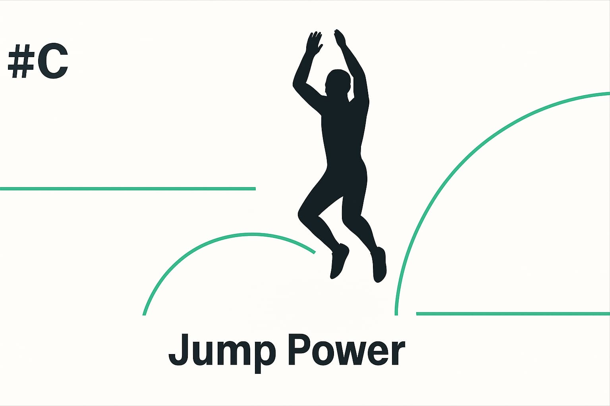

#01｜The Standard of the Body
アスリートに備わるべき“体の基準”を学ぶ。
#02｜Balanced Posture for Baseball Players
野球選手に共通する“整う姿勢”を体感する。
#03｜Power Sequence for Pitchers
投手のための“力の順番”を再構築する。

#04｜Feel the Hip-In
ヒップインを“感じる”ための動作原理を学ぶ。

#05｜Breathing for Reproducibility
再現性を支える“呼吸”の整え方を知る。
#A｜アスリートに備えたい「体の基準」
すべての競技に共通する“基準の軸”。姿勢・重心・呼吸を整える導入編。
#B｜スプリント ― 滑走するスピード
地面を押すよりも“滑らせる”。走るという動きの本質を再設計。

#C｜ジャンプ力 ― 地反力を扱う
高く跳ぶ力は、沈む力から生まれる。反射・タイミング・剛性の調律。
#D｜切り返しスピード ― 接地を制する
一瞬の重心移動を制御する。力より速さ、速さより精度。
#E｜コンディショニング ― 回復をデザインする
“休む”ではなく“戻す”。神経系のリセットと再構築のメソッド。